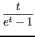
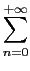
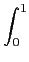

suivant: Accès aux fonctions de
monter: Les rationnels
précédent: Transformer une fraction continue
Table des matières
Index
Le
nième nombre de Bernoulli : bernoulli
bernoulli a comme argument un entier n.
bernoulli renvoie le
nième nombre de Bernoulli B(n).
On a :
 = 
 tn
tn
B0 = 1
Bk'(x) = kBk-1(x)
Bk(x)dx = 0
On a alors :
B(n) = Bn(0)
On tape :
bernoulli(6)
On obtient :
1/42
Documentation de giac écrite par Renée De Graeve